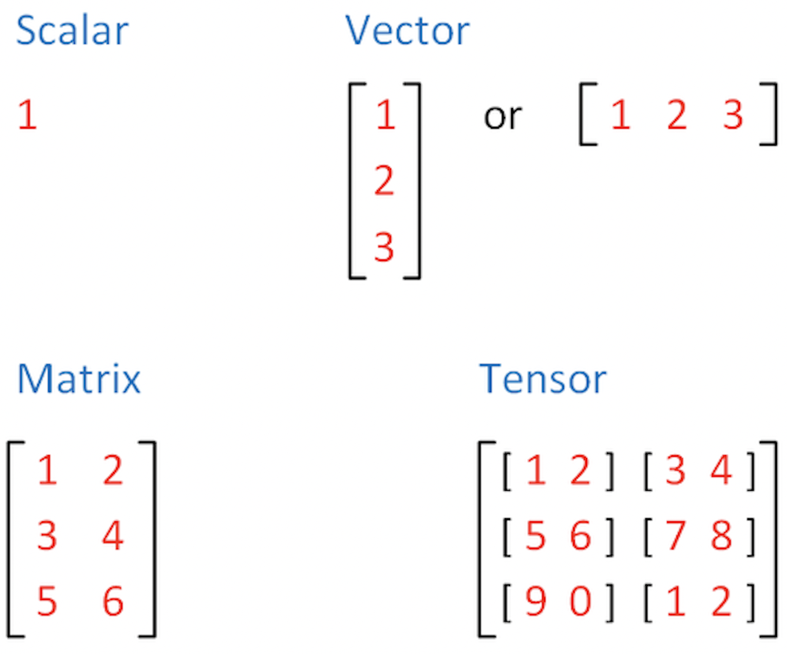

PyTorch introduction
Contents
PyTorch introduction#
This installation guide allows to choose from several version of PyTorch and generate ready-to-run installation command line code for your preferences: https://pytorch.org/get-started/locally/
#runnable installation example:
!pip3 install torch torchvision torchaudio
Collecting torch
Downloading torch-1.12.1-cp38-cp38-manylinux1_x86_64.whl (776.3 MB)
?25l ━━━━━━━━━━━━━━━━━━━━━━━━━━━━━━━━━━━━━━━━ 0.0/776.3 MB ? eta -:--:--
━━━━━━━━━━━━━━━━━━━━━━━━━━━━━━━━━━━━━━━━ 1.1/776.3 MB 34.9 MB/s eta 0:00:23
━━━━━━━━━━━━━━━━━━━━━━━━━━━━━━━━━━━━━━━ 7.8/776.3 MB 114.1 MB/s eta 0:00:07
╸━━━━━━━━━━━━━━━━━━━━━━━━━━━━━━━━━━━━━ 14.8/776.3 MB 196.2 MB/s eta 0:00:04
━╺━━━━━━━━━━━━━━━━━━━━━━━━━━━━━━━━━━━━ 21.6/776.3 MB 197.8 MB/s eta 0:00:04
━╺━━━━━━━━━━━━━━━━━━━━━━━━━━━━━━━━━━━━ 28.5/776.3 MB 194.3 MB/s eta 0:00:04
━╸━━━━━━━━━━━━━━━━━━━━━━━━━━━━━━━━━━━━ 35.4/776.3 MB 195.5 MB/s eta 0:00:04
━━╺━━━━━━━━━━━━━━━━━━━━━━━━━━━━━━━━━━━ 42.3/776.3 MB 194.6 MB/s eta 0:00:04
━━╺━━━━━━━━━━━━━━━━━━━━━━━━━━━━━━━━━━━ 49.1/776.3 MB 194.9 MB/s eta 0:00:04
━━╸━━━━━━━━━━━━━━━━━━━━━━━━━━━━━━━━━━━ 56.0/776.3 MB 194.4 MB/s eta 0:00:04
━━━╺━━━━━━━━━━━━━━━━━━━━━━━━━━━━━━━━━━ 62.9/776.3 MB 195.8 MB/s eta 0:00:04
━━━╺━━━━━━━━━━━━━━━━━━━━━━━━━━━━━━━━━━ 69.8/776.3 MB 195.5 MB/s eta 0:00:04
━━━╸━━━━━━━━━━━━━━━━━━━━━━━━━━━━━━━━━━ 76.7/776.3 MB 197.4 MB/s eta 0:00:04
━━━━╺━━━━━━━━━━━━━━━━━━━━━━━━━━━━━━━━━ 81.8/776.3 MB 169.5 MB/s eta 0:00:05
━━━━╺━━━━━━━━━━━━━━━━━━━━━━━━━━━━━━━━━ 88.2/776.3 MB 160.7 MB/s eta 0:00:05
━━━━╸━━━━━━━━━━━━━━━━━━━━━━━━━━━━━━━━━ 93.9/776.3 MB 169.4 MB/s eta 0:00:05
━━━━╸━━━━━━━━━━━━━━━━━━━━━━━━━━━━━━━━ 100.0/776.3 MB 169.5 MB/s eta 0:00:04
━━━━━╺━━━━━━━━━━━━━━━━━━━━━━━━━━━━━━━ 105.9/776.3 MB 174.2 MB/s eta 0:00:04
━━━━━╺━━━━━━━━━━━━━━━━━━━━━━━━━━━━━━━ 112.4/776.3 MB 166.8 MB/s eta 0:00:04
━━━━━╸━━━━━━━━━━━━━━━━━━━━━━━━━━━━━━━ 119.1/776.3 MB 174.0 MB/s eta 0:00:04
━━━━━━╺━━━━━━━━━━━━━━━━━━━━━━━━━━━━━━ 126.5/776.3 MB 187.9 MB/s eta 0:00:04
━━━━━━╺━━━━━━━━━━━━━━━━━━━━━━━━━━━━━━ 133.1/776.3 MB 190.2 MB/s eta 0:00:04
━━━━━━╸━━━━━━━━━━━━━━━━━━━━━━━━━━━━━━ 139.8/776.3 MB 184.4 MB/s eta 0:00:04
━━━━━━╸━━━━━━━━━━━━━━━━━━━━━━━━━━━━━━ 146.4/776.3 MB 189.6 MB/s eta 0:00:04
━━━━━━━╺━━━━━━━━━━━━━━━━━━━━━━━━━━━━━ 153.7/776.3 MB 191.4 MB/s eta 0:00:04
━━━━━━━╸━━━━━━━━━━━━━━━━━━━━━━━━━━━━━ 160.7/776.3 MB 192.2 MB/s eta 0:00:04
━━━━━━━╸━━━━━━━━━━━━━━━━━━━━━━━━━━━━━ 167.5/776.3 MB 196.3 MB/s eta 0:00:04
━━━━━━━━╺━━━━━━━━━━━━━━━━━━━━━━━━━━━━ 174.3/776.3 MB 194.0 MB/s eta 0:00:04
━━━━━━━━╸━━━━━━━━━━━━━━━━━━━━━━━━━━━━ 180.5/776.3 MB 171.0 MB/s eta 0:00:04
━━━━━━━━╸━━━━━━━━━━━━━━━━━━━━━━━━━━━━ 187.4/776.3 MB 193.6 MB/s eta 0:00:04
━━━━━━━━━╺━━━━━━━━━━━━━━━━━━━━━━━━━━━ 194.1/776.3 MB 193.0 MB/s eta 0:00:04
━━━━━━━━━╸━━━━━━━━━━━━━━━━━━━━━━━━━━━ 201.3/776.3 MB 194.9 MB/s eta 0:00:03
━━━━━━━━━╸━━━━━━━━━━━━━━━━━━━━━━━━━━━ 207.2/776.3 MB 171.0 MB/s eta 0:00:04
━━━━━━━━━━╺━━━━━━━━━━━━━━━━━━━━━━━━━━ 213.6/776.3 MB 175.9 MB/s eta 0:00:04
━━━━━━━━━━╺━━━━━━━━━━━━━━━━━━━━━━━━━━ 219.3/776.3 MB 173.3 MB/s eta 0:00:04
━━━━━━━━━━╸━━━━━━━━━━━━━━━━━━━━━━━━━━ 225.4/776.3 MB 169.4 MB/s eta 0:00:04
━━━━━━━━━━━╺━━━━━━━━━━━━━━━━━━━━━━━━━ 232.2/776.3 MB 181.1 MB/s eta 0:00:04
━━━━━━━━━━━╺━━━━━━━━━━━━━━━━━━━━━━━━━ 238.1/776.3 MB 173.7 MB/s eta 0:00:04
━━━━━━━━━━━╸━━━━━━━━━━━━━━━━━━━━━━━━━ 244.3/776.3 MB 177.5 MB/s eta 0:00:03
━━━━━━━━━━━╸━━━━━━━━━━━━━━━━━━━━━━━━━ 250.3/776.3 MB 173.9 MB/s eta 0:00:04
━━━━━━━━━━━━╺━━━━━━━━━━━━━━━━━━━━━━━━ 256.5/776.3 MB 174.2 MB/s eta 0:00:03
━━━━━━━━━━━━╸━━━━━━━━━━━━━━━━━━━━━━━━ 262.6/776.3 MB 176.3 MB/s eta 0:00:03
━━━━━━━━━━━━╸━━━━━━━━━━━━━━━━━━━━━━━━ 269.3/776.3 MB 183.7 MB/s eta 0:00:03
━━━━━━━━━━━━━╺━━━━━━━━━━━━━━━━━━━━━━━ 275.2/776.3 MB 180.2 MB/s eta 0:00:03
━━━━━━━━━━━━━╺━━━━━━━━━━━━━━━━━━━━━━━ 281.7/776.3 MB 180.8 MB/s eta 0:00:03
━━━━━━━━━━━━━╸━━━━━━━━━━━━━━━━━━━━━━━ 289.0/776.3 MB 192.9 MB/s eta 0:00:03
━━━━━━━━━━━━━━╺━━━━━━━━━━━━━━━━━━━━━━ 295.7/776.3 MB 191.8 MB/s eta 0:00:03
━━━━━━━━━━━━━━╺━━━━━━━━━━━━━━━━━━━━━━ 301.5/776.3 MB 186.4 MB/s eta 0:00:03
━━━━━━━━━━━━━━╸━━━━━━━━━━━━━━━━━━━━━━ 308.4/776.3 MB 173.9 MB/s eta 0:00:03
━━━━━━━━━━━━━━━╺━━━━━━━━━━━━━━━━━━━━━ 315.1/776.3 MB 193.1 MB/s eta 0:00:03
━━━━━━━━━━━━━━━╺━━━━━━━━━━━━━━━━━━━━━ 321.9/776.3 MB 191.8 MB/s eta 0:00:03
━━━━━━━━━━━━━━━╸━━━━━━━━━━━━━━━━━━━━━ 328.7/776.3 MB 192.2 MB/s eta 0:00:03
━━━━━━━━━━━━━━━╸━━━━━━━━━━━━━━━━━━━━━ 335.4/776.3 MB 192.1 MB/s eta 0:00:03
━━━━━━━━━━━━━━━━╺━━━━━━━━━━━━━━━━━━━━ 342.2/776.3 MB 193.9 MB/s eta 0:00:03
━━━━━━━━━━━━━━━━╸━━━━━━━━━━━━━━━━━━━━ 350.5/776.3 MB 194.1 MB/s eta 0:00:03
━━━━━━━━━━━━━━━━━╺━━━━━━━━━━━━━━━━━━━ 357.4/776.3 MB 193.8 MB/s eta 0:00:03
━━━━━━━━━━━━━━━━━╺━━━━━━━━━━━━━━━━━━━ 364.3/776.3 MB 194.8 MB/s eta 0:00:03
━━━━━━━━━━━━━━━━━╸━━━━━━━━━━━━━━━━━━━ 370.1/776.3 MB 177.4 MB/s eta 0:00:03
━━━━━━━━━━━━━━━━━╸━━━━━━━━━━━━━━━━━━━ 376.0/776.3 MB 164.1 MB/s eta 0:00:03
━━━━━━━━━━━━━━━━━━╺━━━━━━━━━━━━━━━━━━ 382.1/776.3 MB 169.9 MB/s eta 0:00:03
━━━━━━━━━━━━━━━━━━╺━━━━━━━━━━━━━━━━━━ 387.9/776.3 MB 171.1 MB/s eta 0:00:03
━━━━━━━━━━━━━━━━━━╸━━━━━━━━━━━━━━━━━━ 394.0/776.3 MB 171.3 MB/s eta 0:00:03
━━━━━━━━━━━━━━━━━━━╺━━━━━━━━━━━━━━━━━ 400.5/776.3 MB 174.6 MB/s eta 0:00:03
━━━━━━━━━━━━━━━━━━━╺━━━━━━━━━━━━━━━━━ 406.6/776.3 MB 174.1 MB/s eta 0:00:03
━━━━━━━━━━━━━━━━━━━╸━━━━━━━━━━━━━━━━━ 412.7/776.3 MB 174.0 MB/s eta 0:00:03
━━━━━━━━━━━━━━━━━━━╸━━━━━━━━━━━━━━━━━ 418.9/776.3 MB 175.6 MB/s eta 0:00:03
━━━━━━━━━━━━━━━━━━━━╺━━━━━━━━━━━━━━━━ 424.9/776.3 MB 174.7 MB/s eta 0:00:03
━━━━━━━━━━━━━━━━━━━━╸━━━━━━━━━━━━━━━━ 430.9/776.3 MB 171.6 MB/s eta 0:00:03
━━━━━━━━━━━━━━━━━━━━╸━━━━━━━━━━━━━━━━ 437.0/776.3 MB 172.7 MB/s eta 0:00:02
━━━━━━━━━━━━━━━━━━━━━╺━━━━━━━━━━━━━━━ 444.4/776.3 MB 173.2 MB/s eta 0:00:02
━━━━━━━━━━━━━━━━━━━━━╸━━━━━━━━━━━━━━━ 451.2/776.3 MB 182.4 MB/s eta 0:00:02
━━━━━━━━━━━━━━━━━━━━━╸━━━━━━━━━━━━━━━ 458.1/776.3 MB 195.2 MB/s eta 0:00:02
━━━━━━━━━━━━━━━━━━━━━━╺━━━━━━━━━━━━━━ 465.0/776.3 MB 194.6 MB/s eta 0:00:02
━━━━━━━━━━━━━━━━━━━━━━╺━━━━━━━━━━━━━━ 471.7/776.3 MB 193.3 MB/s eta 0:00:02
━━━━━━━━━━━━━━━━━━━━━━╸━━━━━━━━━━━━━━ 478.6/776.3 MB 191.5 MB/s eta 0:00:02
━━━━━━━━━━━━━━━━━━━━━━━╺━━━━━━━━━━━━━ 485.4/776.3 MB 193.0 MB/s eta 0:00:02
━━━━━━━━━━━━━━━━━━━━━━━╺━━━━━━━━━━━━━ 492.1/776.3 MB 191.5 MB/s eta 0:00:02
━━━━━━━━━━━━━━━━━━━━━━━╸━━━━━━━━━━━━━ 499.0/776.3 MB 192.0 MB/s eta 0:00:02
━━━━━━━━━━━━━━━━━━━━━━━━╺━━━━━━━━━━━━ 505.9/776.3 MB 195.8 MB/s eta 0:00:02
━━━━━━━━━━━━━━━━━━━━━━━━╺━━━━━━━━━━━━ 512.7/776.3 MB 195.7 MB/s eta 0:00:02
━━━━━━━━━━━━━━━━━━━━━━━━╸━━━━━━━━━━━━ 519.0/776.3 MB 179.9 MB/s eta 0:00:02
━━━━━━━━━━━━━━━━━━━━━━━━━╺━━━━━━━━━━━ 525.3/776.3 MB 179.4 MB/s eta 0:00:02
━━━━━━━━━━━━━━━━━━━━━━━━━╺━━━━━━━━━━━ 531.3/776.3 MB 176.1 MB/s eta 0:00:02
━━━━━━━━━━━━━━━━━━━━━━━━━╸━━━━━━━━━━━ 537.5/776.3 MB 175.9 MB/s eta 0:00:02
━━━━━━━━━━━━━━━━━━━━━━━━━╸━━━━━━━━━━━ 543.8/776.3 MB 177.3 MB/s eta 0:00:02
━━━━━━━━━━━━━━━━━━━━━━━━━━╺━━━━━━━━━━ 550.1/776.3 MB 181.4 MB/s eta 0:00:02
━━━━━━━━━━━━━━━━━━━━━━━━━━╸━━━━━━━━━━ 556.3/776.3 MB 179.6 MB/s eta 0:00:02
━━━━━━━━━━━━━━━━━━━━━━━━━━╸━━━━━━━━━━ 562.1/776.3 MB 169.5 MB/s eta 0:00:02
━━━━━━━━━━━━━━━━━━━━━━━━━━━╺━━━━━━━━━ 568.4/776.3 MB 178.8 MB/s eta 0:00:02
━━━━━━━━━━━━━━━━━━━━━━━━━━━╺━━━━━━━━━ 574.6/776.3 MB 177.0 MB/s eta 0:00:02
━━━━━━━━━━━━━━━━━━━━━━━━━━━╸━━━━━━━━━ 580.6/776.3 MB 174.6 MB/s eta 0:00:02
━━━━━━━━━━━━━━━━━━━━━━━━━━━╸━━━━━━━━━ 586.7/776.3 MB 172.9 MB/s eta 0:00:02
━━━━━━━━━━━━━━━━━━━━━━━━━━━━╺━━━━━━━━ 590.8/776.3 MB 151.0 MB/s eta 0:00:02
━━━━━━━━━━━━━━━━━━━━━━━━━━━━╺━━━━━━━━ 594.6/776.3 MB 122.1 MB/s eta 0:00:02
━━━━━━━━━━━━━━━━━━━━━━━━━━━━╺━━━━━━━━ 598.0/776.3 MB 111.2 MB/s eta 0:00:02
━━━━━━━━━━━━━━━━━━━━━━━━━━━━╸━━━━━━━━ 601.4/776.3 MB 111.3 MB/s eta 0:00:02
━━━━━━━━━━━━━━━━━━━━━━━━━━━━╸━━━━━━━━ 605.5/776.3 MB 113.7 MB/s eta 0:00:02
━━━━━━━━━━━━━━━━━━━━━━━━━━━━━╺━━━━━━━ 609.7/776.3 MB 114.0 MB/s eta 0:00:02
━━━━━━━━━━━━━━━━━━━━━━━━━━━━━╺━━━━━━━ 613.7/776.3 MB 123.1 MB/s eta 0:00:02
━━━━━━━━━━━━━━━━━━━━━━━━━━━━━╺━━━━━━━ 617.8/776.3 MB 113.3 MB/s eta 0:00:02
━━━━━━━━━━━━━━━━━━━━━━━━━━━━━╸━━━━━━━ 620.3/776.3 MB 111.0 MB/s eta 0:00:02
━━━━━━━━━━━━━━━━━━━━━━━━━━━━━╸━━━━━━━ 624.8/776.3 MB 104.8 MB/s eta 0:00:02
━━━━━━━━━━━━━━━━━━━━━━━━━━━━━╸━━━━━━━ 628.1/776.3 MB 104.7 MB/s eta 0:00:02
━━━━━━━━━━━━━━━━━━━━━━━━━━━━━━╺━━━━━━ 632.2/776.3 MB 109.6 MB/s eta 0:00:02
━━━━━━━━━━━━━━━━━━━━━━━━━━━━━━╺━━━━━━ 636.1/776.3 MB 102.6 MB/s eta 0:00:02
━━━━━━━━━━━━━━━━━━━━━━━━━━━━━━━╺━━━━━━ 638.8/776.3 MB 99.9 MB/s eta 0:00:02
━━━━━━━━━━━━━━━━━━━━━━━━━━━━━━╸━━━━━━ 643.2/776.3 MB 108.4 MB/s eta 0:00:02
━━━━━━━━━━━━━━━━━━━━━━━━━━━━━━━╸━━━━━━ 646.6/776.3 MB 99.1 MB/s eta 0:00:02
━━━━━━━━━━━━━━━━━━━━━━━━━━━━━━╸━━━━━━ 650.2/776.3 MB 108.4 MB/s eta 0:00:02
━━━━━━━━━━━━━━━━━━━━━━━━━━━━━━━╺━━━━━ 654.3/776.3 MB 111.4 MB/s eta 0:00:02
━━━━━━━━━━━━━━━━━━━━━━━━━━━━━━━╺━━━━━ 657.8/776.3 MB 102.5 MB/s eta 0:00:02
━━━━━━━━━━━━━━━━━━━━━━━━━━━━━━━╸━━━━━ 661.2/776.3 MB 107.8 MB/s eta 0:00:02
━━━━━━━━━━━━━━━━━━━━━━━━━━━━━━━╸━━━━━ 665.3/776.3 MB 108.7 MB/s eta 0:00:02
━━━━━━━━━━━━━━━━━━━━━━━━━━━━━━━╸━━━━━ 668.8/776.3 MB 101.1 MB/s eta 0:00:02
━━━━━━━━━━━━━━━━━━━━━━━━━━━━━━━━╺━━━━ 671.9/776.3 MB 110.2 MB/s eta 0:00:01
━━━━━━━━━━━━━━━━━━━━━━━━━━━━━━━━╺━━━━ 676.0/776.3 MB 110.8 MB/s eta 0:00:01
━━━━━━━━━━━━━━━━━━━━━━━━━━━━━━━━╺━━━━ 679.7/776.3 MB 104.7 MB/s eta 0:00:01
━━━━━━━━━━━━━━━━━━━━━━━━━━━━━━━━╸━━━━ 683.4/776.3 MB 101.0 MB/s eta 0:00:01
━━━━━━━━━━━━━━━━━━━━━━━━━━━━━━━━╸━━━━ 686.6/776.3 MB 109.0 MB/s eta 0:00:01
━━━━━━━━━━━━━━━━━━━━━━━━━━━━━━━━╸━━━━ 690.7/776.3 MB 109.9 MB/s eta 0:00:01
━━━━━━━━━━━━━━━━━━━━━━━━━━━━━━━━━╺━━━ 694.8/776.3 MB 105.3 MB/s eta 0:00:01
━━━━━━━━━━━━━━━━━━━━━━━━━━━━━━━━━╺━━━ 698.1/776.3 MB 103.8 MB/s eta 0:00:01
━━━━━━━━━━━━━━━━━━━━━━━━━━━━━━━━━╺━━━ 701.3/776.3 MB 102.2 MB/s eta 0:00:01
━━━━━━━━━━━━━━━━━━━━━━━━━━━━━━━━━╸━━━ 705.9/776.3 MB 108.3 MB/s eta 0:00:01
━━━━━━━━━━━━━━━━━━━━━━━━━━━━━━━━━╸━━━ 709.4/776.3 MB 100.8 MB/s eta 0:00:01
━━━━━━━━━━━━━━━━━━━━━━━━━━━━━━━━━╸━━━ 712.4/776.3 MB 112.3 MB/s eta 0:00:01
━━━━━━━━━━━━━━━━━━━━━━━━━━━━━━━━━━╺━━ 716.5/776.3 MB 111.3 MB/s eta 0:00:01
━━━━━━━━━━━━━━━━━━━━━━━━━━━━━━━━━━╺━━ 719.8/776.3 MB 107.3 MB/s eta 0:00:01
━━━━━━━━━━━━━━━━━━━━━━━━━━━━━━━━━━╸━━ 723.9/776.3 MB 107.7 MB/s eta 0:00:01
━━━━━━━━━━━━━━━━━━━━━━━━━━━━━━━━━━╸━━ 728.0/776.3 MB 112.1 MB/s eta 0:00:01
━━━━━━━━━━━━━━━━━━━━━━━━━━━━━━━━━━╸━━ 731.0/776.3 MB 101.9 MB/s eta 0:00:01
━━━━━━━━━━━━━━━━━━━━━━━━━━━━━━━━━━━╺━ 735.4/776.3 MB 106.4 MB/s eta 0:00:01
━━━━━━━━━━━━━━━━━━━━━━━━━━━━━━━━━━━━╺━ 738.4/776.3 MB 97.7 MB/s eta 0:00:01
━━━━━━━━━━━━━━━━━━━━━━━━━━━━━━━━━━━╺━ 742.3/776.3 MB 105.3 MB/s eta 0:00:01
━━━━━━━━━━━━━━━━━━━━━━━━━━━━━━━━━━━╸━ 746.4/776.3 MB 111.3 MB/s eta 0:00:01
━━━━━━━━━━━━━━━━━━━━━━━━━━━━━━━━━━━━╸━ 746.9/776.3 MB 98.8 MB/s eta 0:00:01
━━━━━━━━━━━━━━━━━━━━━━━━━━━━━━━━━━━━╸━ 746.9/776.3 MB 98.8 MB/s eta 0:00:01
━━━━━━━━━━━━━━━━━━━━━━━━━━━━━━━━━━━━╸━ 746.9/776.3 MB 98.8 MB/s eta 0:00:01
━━━━━━━━━━━━━━━━━━━━━━━━━━━━━━━━━━━━╸━ 746.9/776.3 MB 98.8 MB/s eta 0:00:01
━━━━━━━━━━━━━━━━━━━━━━━━━━━━━━━━━━━━╸━ 746.9/776.3 MB 98.8 MB/s eta 0:00:01
━━━━━━━━━━━━━━━━━━━━━━━━━━━━━━━━━━━━╸━ 746.9/776.3 MB 98.8 MB/s eta 0:00:01
━━━━━━━━━━━━━━━━━━━━━━━━━━━━━━━━━━━━╸━ 746.9/776.3 MB 98.8 MB/s eta 0:00:01
━━━━━━━━━━━━━━━━━━━━━━━━━━━━━━━━━━━━╸━ 746.9/776.3 MB 98.8 MB/s eta 0:00:01
━━━━━━━━━━━━━━━━━━━━━━━━━━━━━━━━━━━━╸━ 746.9/776.3 MB 98.8 MB/s eta 0:00:01
━━━━━━━━━━━━━━━━━━━━━━━━━━━━━━━━━━━━╸━ 746.9/776.3 MB 98.8 MB/s eta 0:00:01
━━━━━━━━━━━━━━━━━━━━━━━━━━━━━━━━━━━━╸━ 746.9/776.3 MB 98.8 MB/s eta 0:00:01
━━━━━━━━━━━━━━━━━━━━━━━━━━━━━━━━━━━━╸━ 746.9/776.3 MB 98.8 MB/s eta 0:00:01
━━━━━━━━━━━━━━━━━━━━━━━━━━━━━━━━━━━━╸━ 746.9/776.3 MB 98.8 MB/s eta 0:00:01
━━━━━━━━━━━━━━━━━━━━━━━━━━━━━━━━━━━━╸━ 746.9/776.3 MB 98.8 MB/s eta 0:00:01
━━━━━━━━━━━━━━━━━━━━━━━━━━━━━━━━━━━━╸━ 746.9/776.3 MB 98.8 MB/s eta 0:00:01
━━━━━━━━━━━━━━━━━━━━━━━━━━━━━━━━━━━━╸━ 746.9/776.3 MB 98.8 MB/s eta 0:00:01
━━━━━━━━━━━━━━━━━━━━━━━━━━━━━━━━━━━━╸━ 746.9/776.3 MB 98.8 MB/s eta 0:00:01
━━━━━━━━━━━━━━━━━━━━━━━━━━━━━━━━━━━━╸━ 746.9/776.3 MB 98.8 MB/s eta 0:00:01
━━━━━━━━━━━━━━━━━━━━━━━━━━━━━━━━━━━━╸━ 746.9/776.3 MB 98.8 MB/s eta 0:00:01
━━━━━━━━━━━━━━━━━━━━━━━━━━━━━━━━━━━━╸━ 746.9/776.3 MB 98.8 MB/s eta 0:00:01
━━━━━━━━━━━━━━━━━━━━━━━━━━━━━━━━━━━━╸━ 746.9/776.3 MB 12.2 MB/s eta 0:00:03
━━━━━━━━━━━━━━━━━━━━━━━━━━━━━━━━━━━━╸━ 754.3/776.3 MB 12.6 MB/s eta 0:00:02
━━━━━━━━━━━━━━━━━━━━━━━━━━━━━━━━━━━━╺ 760.2/776.3 MB 178.7 MB/s eta 0:00:01
━━━━━━━━━━━━━━━━━━━━━━━━━━━━━━━━━━━━╸ 766.3/776.3 MB 173.0 MB/s eta 0:00:01
━━━━━━━━━━━━━━━━━━━━━━━━━━━━━━━━━━━━╸ 773.1/776.3 MB 187.1 MB/s eta 0:00:01
━━━━━━━━━━━━━━━━━━━━━━━━━━━━━━━━━━━━╸ 776.3/776.3 MB 181.8 MB/s eta 0:00:01
━━━━━━━━━━━━━━━━━━━━━━━━━━━━━━━━━━━━╸ 776.3/776.3 MB 181.8 MB/s eta 0:00:01
━━━━━━━━━━━━━━━━━━━━━━━━━━━━━━━━━━━━╸ 776.3/776.3 MB 181.8 MB/s eta 0:00:01
━━━━━━━━━━━━━━━━━━━━━━━━━━━━━━━━━━━━╸ 776.3/776.3 MB 181.8 MB/s eta 0:00:01
━━━━━━━━━━━━━━━━━━━━━━━━━━━━━━━━━━━━╸ 776.3/776.3 MB 181.8 MB/s eta 0:00:01
━━━━━━━━━━━━━━━━━━━━━━━━━━━━━━━━━━━━╸ 776.3/776.3 MB 181.8 MB/s eta 0:00:01
━━━━━━━━━━━━━━━━━━━━━━━━━━━━━━━━━━━━╸ 776.3/776.3 MB 181.8 MB/s eta 0:00:01
━━━━━━━━━━━━━━━━━━━━━━━━━━━━━━━━━━━━╸ 776.3/776.3 MB 181.8 MB/s eta 0:00:01
━━━━━━━━━━━━━━━━━━━━━━━━━━━━━━━━━━━━╸ 776.3/776.3 MB 181.8 MB/s eta 0:00:01
━━━━━━━━━━━━━━━━━━━━━━━━━━━━━━━━━━━━╸ 776.3/776.3 MB 181.8 MB/s eta 0:00:01
━━━━━━━━━━━━━━━━━━━━━━━━━━━━━━━━━━━━╸ 776.3/776.3 MB 181.8 MB/s eta 0:00:01
━━━━━━━━━━━━━━━━━━━━━━━━━━━━━━━━━━━━╸ 776.3/776.3 MB 181.8 MB/s eta 0:00:01
━━━━━━━━━━━━━━━━━━━━━━━━━━━━━━━━━━━━╸ 776.3/776.3 MB 181.8 MB/s eta 0:00:01
━━━━━━━━━━━━━━━━━━━━━━━━━━━━━━━━━━━━╸ 776.3/776.3 MB 181.8 MB/s eta 0:00:01
━━━━━━━━━━━━━━━━━━━━━━━━━━━━━━━━━━━━╸ 776.3/776.3 MB 181.8 MB/s eta 0:00:01
━━━━━━━━━━━━━━━━━━━━━━━━━━━━━━━━━━━━╸ 776.3/776.3 MB 181.8 MB/s eta 0:00:01
━━━━━━━━━━━━━━━━━━━━━━━━━━━━━━━━━━━━╸ 776.3/776.3 MB 181.8 MB/s eta 0:00:01
━━━━━━━━━━━━━━━━━━━━━━━━━━━━━━━━━━━━╸ 776.3/776.3 MB 181.8 MB/s eta 0:00:01
━━━━━━━━━━━━━━━━━━━━━━━━━━━━━━━━━━━━╸ 776.3/776.3 MB 181.8 MB/s eta 0:00:01
━━━━━━━━━━━━━━━━━━━━━━━━━━━━━━━━━━━━╸ 776.3/776.3 MB 181.8 MB/s eta 0:00:01
━━━━━━━━━━━━━━━━━━━━━━━━━━━━━━━━━━━━╸ 776.3/776.3 MB 181.8 MB/s eta 0:00:01
━━━━━━━━━━━━━━━━━━━━━━━━━━━━━━━━━━━━╸ 776.3/776.3 MB 181.8 MB/s eta 0:00:01
━━━━━━━━━━━━━━━━━━━━━━━━━━━━━━━━━━━━╸ 776.3/776.3 MB 181.8 MB/s eta 0:00:01
━━━━━━━━━━━━━━━━━━━━━━━━━━━━━━━━━━━━╸ 776.3/776.3 MB 181.8 MB/s eta 0:00:01
━━━━━━━━━━━━━━━━━━━━━━━━━━━━━━━━━━━━╸ 776.3/776.3 MB 181.8 MB/s eta 0:00:01
━━━━━━━━━━━━━━━━━━━━━━━━━━━━━━━━━━━━╸ 776.3/776.3 MB 181.8 MB/s eta 0:00:01
━━━━━━━━━━━━━━━━━━━━━━━━━━━━━━━━━━━━╸ 776.3/776.3 MB 181.8 MB/s eta 0:00:01
━━━━━━━━━━━━━━━━━━━━━━━━━━━━━━━━━━━━╸ 776.3/776.3 MB 181.8 MB/s eta 0:00:01
━━━━━━━━━━━━━━━━━━━━━━━━━━━━━━━━━━━━╸ 776.3/776.3 MB 181.8 MB/s eta 0:00:01
━━━━━━━━━━━━━━━━━━━━━━━━━━━━━━━━━━━━╸ 776.3/776.3 MB 181.8 MB/s eta 0:00:01
━━━━━━━━━━━━━━━━━━━━━━━━━━━━━━━━━━━━╸ 776.3/776.3 MB 181.8 MB/s eta 0:00:01
━━━━━━━━━━━━━━━━━━━━━━━━━━━━━━━━━━━━╸ 776.3/776.3 MB 181.8 MB/s eta 0:00:01
━━━━━━━━━━━━━━━━━━━━━━━━━━━━━━━━━━━━╸ 776.3/776.3 MB 181.8 MB/s eta 0:00:01
━━━━━━━━━━━━━━━━━━━━━━━━━━━━━━━━━━━━╸ 776.3/776.3 MB 181.8 MB/s eta 0:00:01
━━━━━━━━━━━━━━━━━━━━━━━━━━━━━━━━━━━━╸ 776.3/776.3 MB 181.8 MB/s eta 0:00:01
━━━━━━━━━━━━━━━━━━━━━━━━━━━━━━━━━━━━╸ 776.3/776.3 MB 181.8 MB/s eta 0:00:01
━━━━━━━━━━━━━━━━━━━━━━━━━━━━━━━━━━━━╸ 776.3/776.3 MB 181.8 MB/s eta 0:00:01
━━━━━━━━━━━━━━━━━━━━━━━━━━━━━━━━━━━━╸ 776.3/776.3 MB 181.8 MB/s eta 0:00:01
━━━━━━━━━━━━━━━━━━━━━━━━━━━━━━━━━━━━╸ 776.3/776.3 MB 181.8 MB/s eta 0:00:01
━━━━━━━━━━━━━━━━━━━━━━━━━━━━━━━━━━━━╸ 776.3/776.3 MB 181.8 MB/s eta 0:00:01
━━━━━━━━━━━━━━━━━━━━━━━━━━━━━━━━━━━━╸ 776.3/776.3 MB 181.8 MB/s eta 0:00:01
━━━━━━━━━━━━━━━━━━━━━━━━━━━━━━━━━━━━╸ 776.3/776.3 MB 181.8 MB/s eta 0:00:01
━━━━━━━━━━━━━━━━━━━━━━━━━━━━━━━━━━━━╸ 776.3/776.3 MB 181.8 MB/s eta 0:00:01
━━━━━━━━━━━━━━━━━━━━━━━━━━━━━━━━━━━━╸ 776.3/776.3 MB 181.8 MB/s eta 0:00:01
━━━━━━━━━━━━━━━━━━━━━━━━━━━━━━━━━━━━╸ 776.3/776.3 MB 181.8 MB/s eta 0:00:01
━━━━━━━━━━━━━━━━━━━━━━━━━━━━━━━━━━━━╸ 776.3/776.3 MB 181.8 MB/s eta 0:00:01
━━━━━━━━━━━━━━━━━━━━━━━━━━━━━━━━━━━━╸ 776.3/776.3 MB 181.8 MB/s eta 0:00:01
━━━━━━━━━━━━━━━━━━━━━━━━━━━━━━━━━━━━╸ 776.3/776.3 MB 181.8 MB/s eta 0:00:01
━━━━━━━━━━━━━━━━━━━━━━━━━━━━━━━━━━━━╸ 776.3/776.3 MB 181.8 MB/s eta 0:00:01
━━━━━━━━━━━━━━━━━━━━━━━━━━━━━━━━━━━━╸ 776.3/776.3 MB 181.8 MB/s eta 0:00:01
━━━━━━━━━━━━━━━━━━━━━━━━━━━━━━━━━━━━╸ 776.3/776.3 MB 181.8 MB/s eta 0:00:01
━━━━━━━━━━━━━━━━━━━━━━━━━━━━━━━━━━━━╸ 776.3/776.3 MB 181.8 MB/s eta 0:00:01
━━━━━━━━━━━━━━━━━━━━━━━━━━━━━━━━━━━━╸ 776.3/776.3 MB 181.8 MB/s eta 0:00:01
━━━━━━━━━━━━━━━━━━━━━━━━━━━━━━━━━━━━╸ 776.3/776.3 MB 181.8 MB/s eta 0:00:01
━━━━━━━━━━━━━━━━━━━━━━━━━━━━━━━━━━━━╸ 776.3/776.3 MB 181.8 MB/s eta 0:00:01
━━━━━━━━━━━━━━━━━━━━━━━━━━━━━━━━━━━━╸ 776.3/776.3 MB 181.8 MB/s eta 0:00:01
━━━━━━━━━━━━━━━━━━━━━━━━━━━━━━━━━━━━╸ 776.3/776.3 MB 181.8 MB/s eta 0:00:01
━━━━━━━━━━━━━━━━━━━━━━━━━━━━━━━━━━━━╸ 776.3/776.3 MB 181.8 MB/s eta 0:00:01
━━━━━━━━━━━━━━━━━━━━━━━━━━━━━━━━━━━━╸ 776.3/776.3 MB 181.8 MB/s eta 0:00:01
━━━━━━━━━━━━━━━━━━━━━━━━━━━━━━━━━━━━╸ 776.3/776.3 MB 181.8 MB/s eta 0:00:01
━━━━━━━━━━━━━━━━━━━━━━━━━━━━━━━━━━━━╸ 776.3/776.3 MB 181.8 MB/s eta 0:00:01
━━━━━━━━━━━━━━━━━━━━━━━━━━━━━━━━━━━━╸ 776.3/776.3 MB 181.8 MB/s eta 0:00:01
━━━━━━━━━━━━━━━━━━━━━━━━━━━━━━━━━━━━╸ 776.3/776.3 MB 181.8 MB/s eta 0:00:01
━━━━━━━━━━━━━━━━━━━━━━━━━━━━━━━━━━━━╸ 776.3/776.3 MB 181.8 MB/s eta 0:00:01
━━━━━━━━━━━━━━━━━━━━━━━━━━━━━━━━━━━━╸ 776.3/776.3 MB 181.8 MB/s eta 0:00:01
━━━━━━━━━━━━━━━━━━━━━━━━━━━━━━━━━━━━╸ 776.3/776.3 MB 181.8 MB/s eta 0:00:01
━━━━━━━━━━━━━━━━━━━━━━━━━━━━━━━━━━━━╸ 776.3/776.3 MB 181.8 MB/s eta 0:00:01
━━━━━━━━━━━━━━━━━━━━━━━━━━━━━━━━━━━━╸ 776.3/776.3 MB 181.8 MB/s eta 0:00:01
━━━━━━━━━━━━━━━━━━━━━━━━━━━━━━━━━━━━╸ 776.3/776.3 MB 181.8 MB/s eta 0:00:01
━━━━━━━━━━━━━━━━━━━━━━━━━━━━━━━━━━━━╸ 776.3/776.3 MB 181.8 MB/s eta 0:00:01
━━━━━━━━━━━━━━━━━━━━━━━━━━━━━━━━━━━━╸ 776.3/776.3 MB 181.8 MB/s eta 0:00:01
━━━━━━━━━━━━━━━━━━━━━━━━━━━━━━━━━━━━╸ 776.3/776.3 MB 181.8 MB/s eta 0:00:01
━━━━━━━━━━━━━━━━━━━━━━━━━━━━━━━━━━━━╸ 776.3/776.3 MB 181.8 MB/s eta 0:00:01
━━━━━━━━━━━━━━━━━━━━━━━━━━━━━━━━━━━━╸ 776.3/776.3 MB 181.8 MB/s eta 0:00:01
━━━━━━━━━━━━━━━━━━━━━━━━━━━━━━━━━━━━╸ 776.3/776.3 MB 181.8 MB/s eta 0:00:01
━━━━━━━━━━━━━━━━━━━━━━━━━━━━━━━━━━━━╸ 776.3/776.3 MB 181.8 MB/s eta 0:00:01
━━━━━━━━━━━━━━━━━━━━━━━━━━━━━━━━━━━━╸ 776.3/776.3 MB 181.8 MB/s eta 0:00:01
━━━━━━━━━━━━━━━━━━━━━━━━━━━━━━━━━━━━╸ 776.3/776.3 MB 181.8 MB/s eta 0:00:01
━━━━━━━━━━━━━━━━━━━━━━━━━━━━━━━━━━━━╸ 776.3/776.3 MB 181.8 MB/s eta 0:00:01
━━━━━━━━━━━━━━━━━━━━━━━━━━━━━━━━━━━━╸ 776.3/776.3 MB 181.8 MB/s eta 0:00:01
━━━━━━━━━━━━━━━━━━━━━━━━━━━━━━━━━━━━╸ 776.3/776.3 MB 181.8 MB/s eta 0:00:01
━━━━━━━━━━━━━━━━━━━━━━━━━━━━━━━━━━━━╸ 776.3/776.3 MB 181.8 MB/s eta 0:00:01
━━━━━━━━━━━━━━━━━━━━━━━━━━━━━━━━━━━━╸ 776.3/776.3 MB 181.8 MB/s eta 0:00:01
━━━━━━━━━━━━━━━━━━━━━━━━━━━━━━━━━━━━╸ 776.3/776.3 MB 181.8 MB/s eta 0:00:01
━━━━━━━━━━━━━━━━━━━━━━━━━━━━━━━━━━━━╸ 776.3/776.3 MB 181.8 MB/s eta 0:00:01
━━━━━━━━━━━━━━━━━━━━━━━━━━━━━━━━━━━━╸ 776.3/776.3 MB 181.8 MB/s eta 0:00:01
━━━━━━━━━━━━━━━━━━━━━━━━━━━━━━━━━━━━╸ 776.3/776.3 MB 181.8 MB/s eta 0:00:01
━━━━━━━━━━━━━━━━━━━━━━━━━━━━━━━━━━━━╸ 776.3/776.3 MB 181.8 MB/s eta 0:00:01
━━━━━━━━━━━━━━━━━━━━━━━━━━━━━━━━━━━━╸ 776.3/776.3 MB 181.8 MB/s eta 0:00:01
━━━━━━━━━━━━━━━━━━━━━━━━━━━━━━━━━━━━╸ 776.3/776.3 MB 181.8 MB/s eta 0:00:01
━━━━━━━━━━━━━━━━━━━━━━━━━━━━━━━━━━━━╸ 776.3/776.3 MB 181.8 MB/s eta 0:00:01
━━━━━━━━━━━━━━━━━━━━━━━━━━━━━━━━━━━━╸ 776.3/776.3 MB 181.8 MB/s eta 0:00:01
━━━━━━━━━━━━━━━━━━━━━━━━━━━━━━━━━━━━╸ 776.3/776.3 MB 181.8 MB/s eta 0:00:01
━━━━━━━━━━━━━━━━━━━━━━━━━━━━━━━━━━━━╸ 776.3/776.3 MB 181.8 MB/s eta 0:00:01
━━━━━━━━━━━━━━━━━━━━━━━━━━━━━━━━━━━━╸ 776.3/776.3 MB 181.8 MB/s eta 0:00:01
━━━━━━━━━━━━━━━━━━━━━━━━━━━━━━━━━━━━╸ 776.3/776.3 MB 181.8 MB/s eta 0:00:01
━━━━━━━━━━━━━━━━━━━━━━━━━━━━━━━━━━━━╸ 776.3/776.3 MB 181.8 MB/s eta 0:00:01
━━━━━━━━━━━━━━━━━━━━━━━━━━━━━━━━━━━━╸ 776.3/776.3 MB 181.8 MB/s eta 0:00:01
━━━━━━━━━━━━━━━━━━━━━━━━━━━━━━━━━━━━╸ 776.3/776.3 MB 181.8 MB/s eta 0:00:01
━━━━━━━━━━━━━━━━━━━━━━━━━━━━━━━━━━━━╸ 776.3/776.3 MB 181.8 MB/s eta 0:00:01
━━━━━━━━━━━━━━━━━━━━━━━━━━━━━━━━━━━━╸ 776.3/776.3 MB 181.8 MB/s eta 0:00:01
━━━━━━━━━━━━━━━━━━━━━━━━━━━━━━━━━━━━╸ 776.3/776.3 MB 181.8 MB/s eta 0:00:01
━━━━━━━━━━━━━━━━━━━━━━━━━━━━━━━━━━━━╸ 776.3/776.3 MB 181.8 MB/s eta 0:00:01
━━━━━━━━━━━━━━━━━━━━━━━━━━━━━━━━━━━━╸ 776.3/776.3 MB 181.8 MB/s eta 0:00:01
━━━━━━━━━━━━━━━━━━━━━━━━━━━━━━━━━━━━╸ 776.3/776.3 MB 181.8 MB/s eta 0:00:01
━━━━━━━━━━━━━━━━━━━━━━━━━━━━━━━━━━━━╸ 776.3/776.3 MB 181.8 MB/s eta 0:00:01
━━━━━━━━━━━━━━━━━━━━━━━━━━━━━━━━━━━━╸ 776.3/776.3 MB 181.8 MB/s eta 0:00:01
━━━━━━━━━━━━━━━━━━━━━━━━━━━━━━━━━━━━╸ 776.3/776.3 MB 181.8 MB/s eta 0:00:01
━━━━━━━━━━━━━━━━━━━━━━━━━━━━━━━━━━━━╸ 776.3/776.3 MB 181.8 MB/s eta 0:00:01
━━━━━━━━━━━━━━━━━━━━━━━━━━━━━━━━━━━━╸ 776.3/776.3 MB 181.8 MB/s eta 0:00:01
━━━━━━━━━━━━━━━━━━━━━━━━━━━━━━━━━━━━╸ 776.3/776.3 MB 181.8 MB/s eta 0:00:01
━━━━━━━━━━━━━━━━━━━━━━━━━━━━━━━━━━━━╸ 776.3/776.3 MB 181.8 MB/s eta 0:00:01
━━━━━━━━━━━━━━━━━━━━━━━━━━━━━━━━━━━━╸ 776.3/776.3 MB 181.8 MB/s eta 0:00:01
━━━━━━━━━━━━━━━━━━━━━━━━━━━━━━━━━━━━╸ 776.3/776.3 MB 181.8 MB/s eta 0:00:01
━━━━━━━━━━━━━━━━━━━━━━━━━━━━━━━━━━━━╸ 776.3/776.3 MB 181.8 MB/s eta 0:00:01
━━━━━━━━━━━━━━━━━━━━━━━━━━━━━━━━━━━━╸ 776.3/776.3 MB 181.8 MB/s eta 0:00:01
━━━━━━━━━━━━━━━━━━━━━━━━━━━━━━━━━━━━╸ 776.3/776.3 MB 181.8 MB/s eta 0:00:01
━━━━━━━━━━━━━━━━━━━━━━━━━━━━━━━━━━━━╸ 776.3/776.3 MB 181.8 MB/s eta 0:00:01
━━━━━━━━━━━━━━━━━━━━━━━━━━━━━━━━━━━━╸ 776.3/776.3 MB 181.8 MB/s eta 0:00:01
━━━━━━━━━━━━━━━━━━━━━━━━━━━━━━━━━━━━╸ 776.3/776.3 MB 181.8 MB/s eta 0:00:01
━━━━━━━━━━━━━━━━━━━━━━━━━━━━━━━━━━━━╸ 776.3/776.3 MB 181.8 MB/s eta 0:00:01
━━━━━━━━━━━━━━━━━━━━━━━━━━━━━━━━━━━━╸ 776.3/776.3 MB 181.8 MB/s eta 0:00:01
━━━━━━━━━━━━━━━━━━━━━━━━━━━━━━━━━━━━╸ 776.3/776.3 MB 181.8 MB/s eta 0:00:01
━━━━━━━━━━━━━━━━━━━━━━━━━━━━━━━━━━━━╸ 776.3/776.3 MB 181.8 MB/s eta 0:00:01
━━━━━━━━━━━━━━━━━━━━━━━━━━━━━━━━━━━━╸ 776.3/776.3 MB 181.8 MB/s eta 0:00:01
━━━━━━━━━━━━━━━━━━━━━━━━━━━━━━━━━━━━╸ 776.3/776.3 MB 181.8 MB/s eta 0:00:01
━━━━━━━━━━━━━━━━━━━━━━━━━━━━━━━━━━━━╸ 776.3/776.3 MB 181.8 MB/s eta 0:00:01
━━━━━━━━━━━━━━━━━━━━━━━━━━━━━━━━━━━━╸ 776.3/776.3 MB 181.8 MB/s eta 0:00:01
━━━━━━━━━━━━━━━━━━━━━━━━━━━━━━━━━━━━╸ 776.3/776.3 MB 181.8 MB/s eta 0:00:01
━━━━━━━━━━━━━━━━━━━━━━━━━━━━━━━━━━━━╸ 776.3/776.3 MB 181.8 MB/s eta 0:00:01
━━━━━━━━━━━━━━━━━━━━━━━━━━━━━━━━━━━━╸ 776.3/776.3 MB 181.8 MB/s eta 0:00:01
━━━━━━━━━━━━━━━━━━━━━━━━━━━━━━━━━━━━╸ 776.3/776.3 MB 181.8 MB/s eta 0:00:01
━━━━━━━━━━━━━━━━━━━━━━━━━━━━━━━━━━━━╸ 776.3/776.3 MB 181.8 MB/s eta 0:00:01
━━━━━━━━━━━━━━━━━━━━━━━━━━━━━━━━━━━━╸ 776.3/776.3 MB 181.8 MB/s eta 0:00:01
━━━━━━━━━━━━━━━━━━━━━━━━━━━━━━━━━━━━╸ 776.3/776.3 MB 181.8 MB/s eta 0:00:01
━━━━━━━━━━━━━━━━━━━━━━━━━━━━━━━━━━━━╸ 776.3/776.3 MB 181.8 MB/s eta 0:00:01
━━━━━━━━━━━━━━━━━━━━━━━━━━━━━━━━━━━━╸ 776.3/776.3 MB 181.8 MB/s eta 0:00:01
━━━━━━━━━━━━━━━━━━━━━━━━━━━━━━━━━━━━╸ 776.3/776.3 MB 181.8 MB/s eta 0:00:01
━━━━━━━━━━━━━━━━━━━━━━━━━━━━━━━━━━━━╸ 776.3/776.3 MB 181.8 MB/s eta 0:00:01
━━━━━━━━━━━━━━━━━━━━━━━━━━━━━━━━━━━━╸ 776.3/776.3 MB 181.8 MB/s eta 0:00:01
━━━━━━━━━━━━━━━━━━━━━━━━━━━━━━━━━━━━╸ 776.3/776.3 MB 181.8 MB/s eta 0:00:01
━━━━━━━━━━━━━━━━━━━━━━━━━━━━━━━━━━━━╸ 776.3/776.3 MB 181.8 MB/s eta 0:00:01
━━━━━━━━━━━━━━━━━━━━━━━━━━━━━━━━━━━━╸ 776.3/776.3 MB 181.8 MB/s eta 0:00:01
━━━━━━━━━━━━━━━━━━━━━━━━━━━━━━━━━━━━╸ 776.3/776.3 MB 181.8 MB/s eta 0:00:01
━━━━━━━━━━━━━━━━━━━━━━━━━━━━━━━━━━━━╸ 776.3/776.3 MB 181.8 MB/s eta 0:00:01
━━━━━━━━━━━━━━━━━━━━━━━━━━━━━━━━━━━━╸ 776.3/776.3 MB 181.8 MB/s eta 0:00:01
━━━━━━━━━━━━━━━━━━━━━━━━━━━━━━━━━━━━╸ 776.3/776.3 MB 181.8 MB/s eta 0:00:01
━━━━━━━━━━━━━━━━━━━━━━━━━━━━━━━━━━━━╸ 776.3/776.3 MB 181.8 MB/s eta 0:00:01
━━━━━━━━━━━━━━━━━━━━━━━━━━━━━━━━━━━━╸ 776.3/776.3 MB 181.8 MB/s eta 0:00:01
━━━━━━━━━━━━━━━━━━━━━━━━━━━━━━━━━━━━╸ 776.3/776.3 MB 181.8 MB/s eta 0:00:01
━━━━━━━━━━━━━━━━━━━━━━━━━━━━━━━━━━━━╸ 776.3/776.3 MB 181.8 MB/s eta 0:00:01
━━━━━━━━━━━━━━━━━━━━━━━━━━━━━━━━━━━━╸ 776.3/776.3 MB 181.8 MB/s eta 0:00:01
━━━━━━━━━━━━━━━━━━━━━━━━━━━━━━━━━━━━╸ 776.3/776.3 MB 181.8 MB/s eta 0:00:01
━━━━━━━━━━━━━━━━━━━━━━━━━━━━━━━━━━━━╸ 776.3/776.3 MB 181.8 MB/s eta 0:00:01
━━━━━━━━━━━━━━━━━━━━━━━━━━━━━━━━━━━━╸ 776.3/776.3 MB 181.8 MB/s eta 0:00:01
━━━━━━━━━━━━━━━━━━━━━━━━━━━━━━━━━━━━╸ 776.3/776.3 MB 181.8 MB/s eta 0:00:01
━━━━━━━━━━━━━━━━━━━━━━━━━━━━━━━━━━━━╸ 776.3/776.3 MB 181.8 MB/s eta 0:00:01
━━━━━━━━━━━━━━━━━━━━━━━━━━━━━━━━━━━━╸ 776.3/776.3 MB 181.8 MB/s eta 0:00:01
━━━━━━━━━━━━━━━━━━━━━━━━━━━━━━━━━━━━╸ 776.3/776.3 MB 181.8 MB/s eta 0:00:01
━━━━━━━━━━━━━━━━━━━━━━━━━━━━━━━━━━━━╸ 776.3/776.3 MB 181.8 MB/s eta 0:00:01
━━━━━━━━━━━━━━━━━━━━━━━━━━━━━━━━━━━━╸ 776.3/776.3 MB 181.8 MB/s eta 0:00:01
━━━━━━━━━━━━━━━━━━━━━━━━━━━━━━━━━━━━╸ 776.3/776.3 MB 181.8 MB/s eta 0:00:01
━━━━━━━━━━━━━━━━━━━━━━━━━━━━━━━━━━━━╸ 776.3/776.3 MB 181.8 MB/s eta 0:00:01
━━━━━━━━━━━━━━━━━━━━━━━━━━━━━━━━━━━━╸ 776.3/776.3 MB 181.8 MB/s eta 0:00:01
━━━━━━━━━━━━━━━━━━━━━━━━━━━━━━━━━━━━╸ 776.3/776.3 MB 181.8 MB/s eta 0:00:01
━━━━━━━━━━━━━━━━━━━━━━━━━━━━━━━━━━━━╸ 776.3/776.3 MB 181.8 MB/s eta 0:00:01
━━━━━━━━━━━━━━━━━━━━━━━━━━━━━━━━━━━━╸ 776.3/776.3 MB 181.8 MB/s eta 0:00:01
━━━━━━━━━━━━━━━━━━━━━━━━━━━━━━━━━━━━╸ 776.3/776.3 MB 181.8 MB/s eta 0:00:01
━━━━━━━━━━━━━━━━━━━━━━━━━━━━━━━━━━━━╸ 776.3/776.3 MB 181.8 MB/s eta 0:00:01
━━━━━━━━━━━━━━━━━━━━━━━━━━━━━━━━━━━━╸ 776.3/776.3 MB 181.8 MB/s eta 0:00:01
━━━━━━━━━━━━━━━━━━━━━━━━━━━━━━━━━━━━╸ 776.3/776.3 MB 181.8 MB/s eta 0:00:01
━━━━━━━━━━━━━━━━━━━━━━━━━━━━━━━━━━━━╸ 776.3/776.3 MB 181.8 MB/s eta 0:00:01
━━━━━━━━━━━━━━━━━━━━━━━━━━━━━━━━━━━━╸ 776.3/776.3 MB 181.8 MB/s eta 0:00:01
━━━━━━━━━━━━━━━━━━━━━━━━━━━━━━━━━━━━╸ 776.3/776.3 MB 181.8 MB/s eta 0:00:01
━━━━━━━━━━━━━━━━━━━━━━━━━━━━━━━━━━━━╸ 776.3/776.3 MB 181.8 MB/s eta 0:00:01
━━━━━━━━━━━━━━━━━━━━━━━━━━━━━━━━━━━━╸ 776.3/776.3 MB 181.8 MB/s eta 0:00:01
━━━━━━━━━━━━━━━━━━━━━━━━━━━━━━━━━━━━╸ 776.3/776.3 MB 181.8 MB/s eta 0:00:01
━━━━━━━━━━━━━━━━━━━━━━━━━━━━━━━━━━━━╸ 776.3/776.3 MB 181.8 MB/s eta 0:00:01
━━━━━━━━━━━━━━━━━━━━━━━━━━━━━━━━━━━━╸ 776.3/776.3 MB 181.8 MB/s eta 0:00:01
━━━━━━━━━━━━━━━━━━━━━━━━━━━━━━━━━━━━╸ 776.3/776.3 MB 181.8 MB/s eta 0:00:01
━━━━━━━━━━━━━━━━━━━━━━━━━━━━━━━━━━━━╸ 776.3/776.3 MB 181.8 MB/s eta 0:00:01
━━━━━━━━━━━━━━━━━━━━━━━━━━━━━━━━━━━━╸ 776.3/776.3 MB 181.8 MB/s eta 0:00:01
━━━━━━━━━━━━━━━━━━━━━━━━━━━━━━━━━━━━╸ 776.3/776.3 MB 181.8 MB/s eta 0:00:01
━━━━━━━━━━━━━━━━━━━━━━━━━━━━━━━━━━━━╸ 776.3/776.3 MB 181.8 MB/s eta 0:00:01
━━━━━━━━━━━━━━━━━━━━━━━━━━━━━━━━━━━━╸ 776.3/776.3 MB 181.8 MB/s eta 0:00:01
━━━━━━━━━━━━━━━━━━━━━━━━━━━━━━━━━━━━╸ 776.3/776.3 MB 181.8 MB/s eta 0:00:01
━━━━━━━━━━━━━━━━━━━━━━━━━━━━━━━━━━━━╸ 776.3/776.3 MB 181.8 MB/s eta 0:00:01
━━━━━━━━━━━━━━━━━━━━━━━━━━━━━━━━━━━━╸ 776.3/776.3 MB 181.8 MB/s eta 0:00:01
━━━━━━━━━━━━━━━━━━━━━━━━━━━━━━━━━━━━╸ 776.3/776.3 MB 181.8 MB/s eta 0:00:01
━━━━━━━━━━━━━━━━━━━━━━━━━━━━━━━━━━━━╸ 776.3/776.3 MB 181.8 MB/s eta 0:00:01
━━━━━━━━━━━━━━━━━━━━━━━━━━━━━━━━━━━━╸ 776.3/776.3 MB 181.8 MB/s eta 0:00:01
━━━━━━━━━━━━━━━━━━━━━━━━━━━━━━━━━━━━╸ 776.3/776.3 MB 181.8 MB/s eta 0:00:01
━━━━━━━━━━━━━━━━━━━━━━━━━━━━━━━━━━━━╸ 776.3/776.3 MB 181.8 MB/s eta 0:00:01
━━━━━━━━━━━━━━━━━━━━━━━━━━━━━━━━━━━━╸ 776.3/776.3 MB 181.8 MB/s eta 0:00:01
━━━━━━━━━━━━━━━━━━━━━━━━━━━━━━━━━━━━╸ 776.3/776.3 MB 181.8 MB/s eta 0:00:01
━━━━━━━━━━━━━━━━━━━━━━━━━━━━━━━━━━━━╸ 776.3/776.3 MB 181.8 MB/s eta 0:00:01
━━━━━━━━━━━━━━━━━━━━━━━━━━━━━━━━━━━━╸ 776.3/776.3 MB 181.8 MB/s eta 0:00:01
━━━━━━━━━━━━━━━━━━━━━━━━━━━━━━━━━━━━╸ 776.3/776.3 MB 181.8 MB/s eta 0:00:01
━━━━━━━━━━━━━━━━━━━━━━━━━━━━━━━━━━━━╸ 776.3/776.3 MB 181.8 MB/s eta 0:00:01
━━━━━━━━━━━━━━━━━━━━━━━━━━━━━━━━━━━━━━━ 776.3/776.3 MB 1.3 MB/s eta 0:00:00
?25h
Collecting torchvision
Downloading torchvision-0.13.1-cp38-cp38-manylinux1_x86_64.whl (19.1 MB)
?25l ━━━━━━━━━━━━━━━━━━━━━━━━━━━━━━━━━━━━━━━━ 0.0/19.1 MB ? eta -:--:--
━━━━━━━━━━━━━━╺━━━━━━━━━━━━━━━━━━━━━━━━━ 6.7/19.1 MB 201.7 MB/s eta 0:00:01
━━━━━━━━━━━━━━━━━━━━━━━━━━━╸━━━━━━━━━━━ 13.6/19.1 MB 195.0 MB/s eta 0:00:01
━━━━━━━━━━━━━━━━━━━━━━━━━━━━━━━━━━━━━━╸ 19.1/19.1 MB 196.2 MB/s eta 0:00:01
━━━━━━━━━━━━━━━━━━━━━━━━━━━━━━━━━━━━━━╸ 19.1/19.1 MB 196.2 MB/s eta 0:00:01
━━━━━━━━━━━━━━━━━━━━━━━━━━━━━━━━━━━━━━━━ 19.1/19.1 MB 83.8 MB/s eta 0:00:00
?25h
Collecting torchaudio
Downloading torchaudio-0.12.1-cp38-cp38-manylinux1_x86_64.whl (3.7 MB)
?25l ━━━━━━━━━━━━━━━━━━━━━━━━━━━━━━━━━━━━━━━━ 0.0/3.7 MB ? eta -:--:--
━━━━━━━━━━━━━━━━━━━━━━━━━━━━━━━━━━━━━━━━ 3.7/3.7 MB 115.3 MB/s eta 0:00:00
?25h
Collecting typing-extensions
Downloading typing_extensions-4.3.0-py3-none-any.whl (25 kB)
Requirement already satisfied: pillow!=8.3.*,>=5.3.0 in /opt/hostedtoolcache/Python/3.8.14/x64/lib/python3.8/site-packages (from torchvision) (9.2.0)
Requirement already satisfied: requests in /opt/hostedtoolcache/Python/3.8.14/x64/lib/python3.8/site-packages (from torchvision) (2.28.1)
Requirement already satisfied: numpy in /opt/hostedtoolcache/Python/3.8.14/x64/lib/python3.8/site-packages (from torchvision) (1.23.3)
Requirement already satisfied: idna<4,>=2.5 in /opt/hostedtoolcache/Python/3.8.14/x64/lib/python3.8/site-packages (from requests->torchvision) (3.4)
Requirement already satisfied: certifi>=2017.4.17 in /opt/hostedtoolcache/Python/3.8.14/x64/lib/python3.8/site-packages (from requests->torchvision) (2022.9.24)
Requirement already satisfied: urllib3<1.27,>=1.21.1 in /opt/hostedtoolcache/Python/3.8.14/x64/lib/python3.8/site-packages (from requests->torchvision) (1.26.12)
Requirement already satisfied: charset-normalizer<3,>=2 in /opt/hostedtoolcache/Python/3.8.14/x64/lib/python3.8/site-packages (from requests->torchvision) (2.1.1)
Installing collected packages: typing-extensions, torch, torchvision, torchaudio
^C
ERROR: Operation cancelled by user
After the preferred method of installation is complete, we import the library to make it usable:
import torch
Tensors#
Tensors are the default data structure used for the representation of numbers in PyTorch. In mathematics (algebra), a tensor is a generalization of the concept of a matrix. For our purposes, let’s think of a tensor as basically an \(n\)-dimensional array of numbers.
For example, a single scalar (a single number) is a zero-dimensional array. An \(n\)-dimensional vector is a one-dimensional array of \(n\) numbers. An \(n \times m\) matrix is a two-dimensional array with \(n\) rows and \(m\) columns. All of these -scalars, vectors and matrices- are tensors. But /tensors also include even more high-dimensional objects/. For instance, an \(k \times n \times m\) tensor is a three-dimensional array, which includes \(k\) matrices, each of which has \(n\) rows and \(m\) columns. And so on.
Full documetation for torch.Tensor class: https://pytorch.org/docs/stable/tensors.html

### Exercise 1: Dimensions of tensorsWhat are the dimensions of the following tensors?
\(1\)
\([1,2,3]\)
\([[1,2], [3,4]]\)
\([[1,2], [3,4], [5,6]]\)
\([[[1,2], [3,4], [5,6]]]\)
Initialising a tensor:
This section presents various ways to create a tensor in PyTorch.
torch.tensor is a constructor which can create a tensor from a list or sequence
torch.zeros, torch.ones and torch.full create a tensor of specified size filled with zeroes, ones or specified value respectively
Tensor can be initialised from a list:
a_list = [1, 2, 3, 4]
tensor_from_list = torch.tensor(a_list)
tensor_from_list
tensor([1, 2, 3, 4])
Or directly:
new_tensor = torch.tensor([1, 2, 3, 4])
new_tensor
tensor([1, 2, 3, 4])
Tensor constructor will replicate shape and dimensionality of the data passed to it:
tensor_0d = torch.tensor(1)
tensor_0d
tensor(1)
tensor_2d = torch.tensor([[1,2,3],[4,5,6]])
tensor_2d
tensor([[1, 2, 3],
[4, 5, 6]])
Tensor can also be constructed from numpy.array:
import numpy as np
np_array = np.zeros((2,2))
np_array_to_tensor = torch.tensor(np_array)
np_array_to_tensor
tensor([[0., 0.],
[0., 0.]], dtype=torch.float64)
Or with build-in torch functionality:
zeros = torch.zeros((2,2))
zeros
ones = torch.ones((2,3))
ones
tensor([[1., 1., 1.],
[1., 1., 1.]])
filled = torch.full((4,3), 5)
filled
tensor([[5, 5, 5],
[5, 5, 5],
[5, 5, 5],
[5, 5, 5]])
Tensor-supported data types:
numeric: float, int
boolean
complex numbers
All the values in the same tensor are of the same data type.
true = torch.tensor([True, True])
true
tensor([True, True])
true.dtype
true = torch.tensor([True, 1])
true
tensor([1, 1])
true.dtype
torch.int64
What about strings? PyTorch tensors have no character or string data type support.
hello = 'Hello World!'
hello_tensor = torch.tensor([ord(char) for char in hello])
hello_tensor
tensor([ 72, 101, 108, 108, 111, 32, 87, 111, 114, 108, 100, 33])
Attributes of a tensor:
print(f"Shape of tensor: {hello_tensor.shape}")
print(f"Datatype of tensor: {hello_tensor.dtype}")
print(f"Device tensor is stored on: {hello_tensor.device}")
Shape of tensor: torch.Size([12])
Datatype of tensor: torch.int64
Device tensor is stored on: cpu
Slicing and indexing#
The same slicing method used on arrays and numpy arrays can be used on tensors as well. The retured result will also be a tensor.
bigger_tensor = torch.tensor([[1,2,3],[4,5,6],[7,8,9],[10,11,12]])
first_row = bigger_tensor[0]
last_row = bigger_tensor[3]
first_row
tensor([1, 2, 3])
first_column = bigger_tensor[:,0]
first_column
tensor([ 1, 4, 7, 10])
Joining tensors:
head_and_tail = torch.cat([first_row, last_row])
head_and_tail
tensor([ 1, 2, 3, 10, 11, 12])
What if we want to add a dimension?
head_and_tail = torch.stack([first_row, last_row])
head_and_tail
tensor([[ 1, 2, 3],
[10, 11, 12]])
Accesing a single value output with indices:
value = bigger_tensor[1][2]
value
tensor(6)
tensor.item() function returns a value of a single-item tensor:
value.item()
6
Reshaping#
torch.reshape() is a frequently used way of returning a tensor in the specified shape.
tensor_1 = torch.tensor([[1, 2], [3, 4]])
tensor_2 = tensor_1.reshape(4, 1)
print(tensor_2)
tensor([[1],
[2],
[3],
[4]])
a = torch.tensor([[0, 1], [2, 3]])
b = torch.reshape(a, (-1,))
print(a)
tensor([[0, 1],
[2, 3]])
Transposing#
It is possible to transpose a tensor by specified dimesions using the method:
torch.transpose(input_tens, dim_0, dim_1).
tensor_1 = torch.tensor([[10, 20, 30],
[40, 50, 60],
[70, 80, 90]])
tensor_1_transpose = torch.transpose(tensor_1, 0, 1)
print(tensor_1_transpose)
tensor([[10, 40, 70],
[20, 50, 80],
[30, 60, 90]])
Matrix Multiplication#
To perform a matrix multiplications on tensors, we use the method: torch.mm(tensor1, tensor2)
If tensor1 is a (n×m) tensor, and tensor2 is a (m×p) tensor, the output will be a (n×p) tensor.
tensor_1 = torch.tensor([[1, 2], [3, 4], [3, 4]])
tensor_2 = torch.tensor([[5, 6], [7, 8], [9, 10]])
product = torch.mm(tensor_1, tensor_2)
print(product)
---------------------------------------------------------------------------
RuntimeError Traceback (most recent call last)
<ipython-input-9-6c0326fc070e> in <module>
2 tensor_2 = torch.tensor([[5, 6], [7, 8], [9, 10]])
3
----> 4 product = torch.mm(tensor_1, tensor_2)
5
6 print(product)
RuntimeError: mat1 and mat2 shapes cannot be multiplied (3x2 and 3x2)
Linear model:
x*w + b = y
Loss